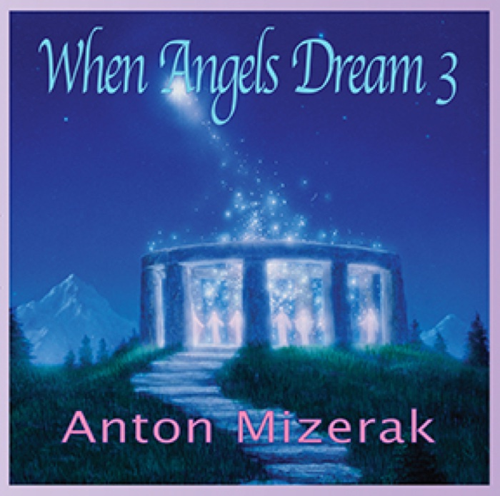
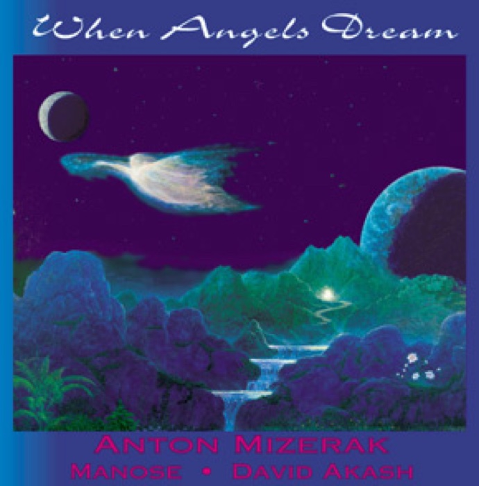
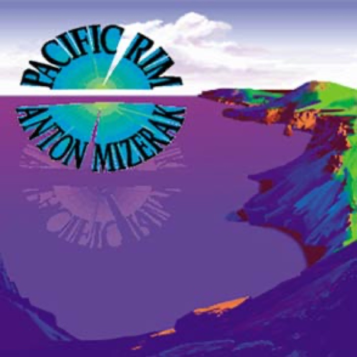
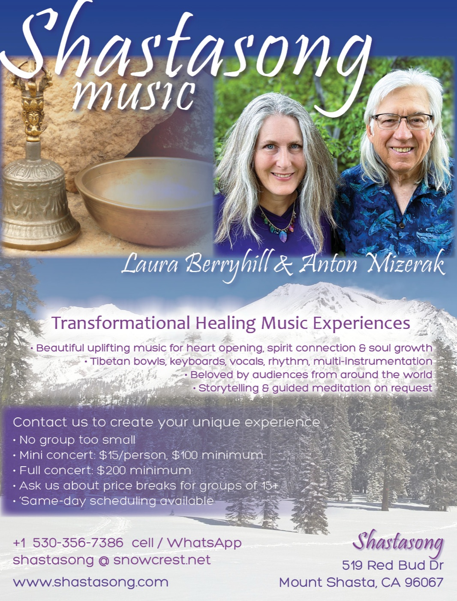
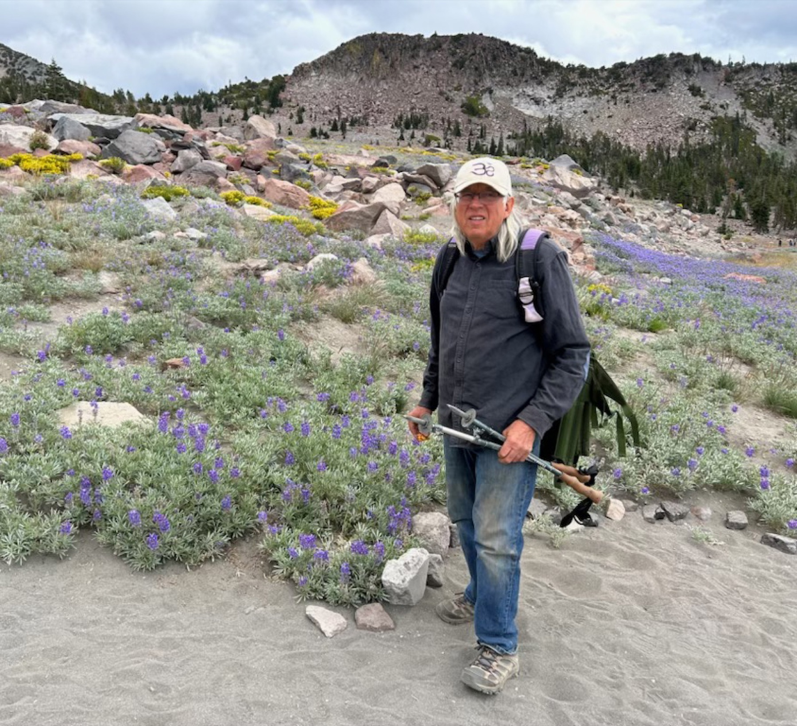
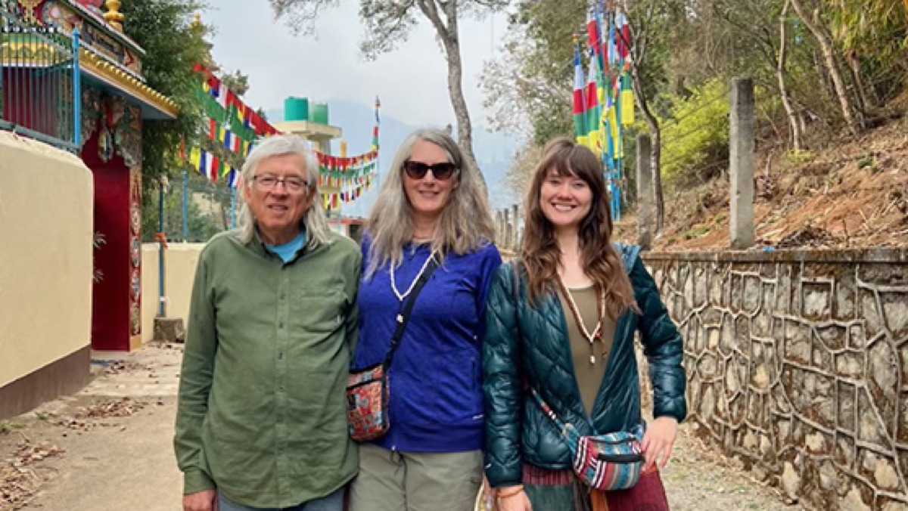
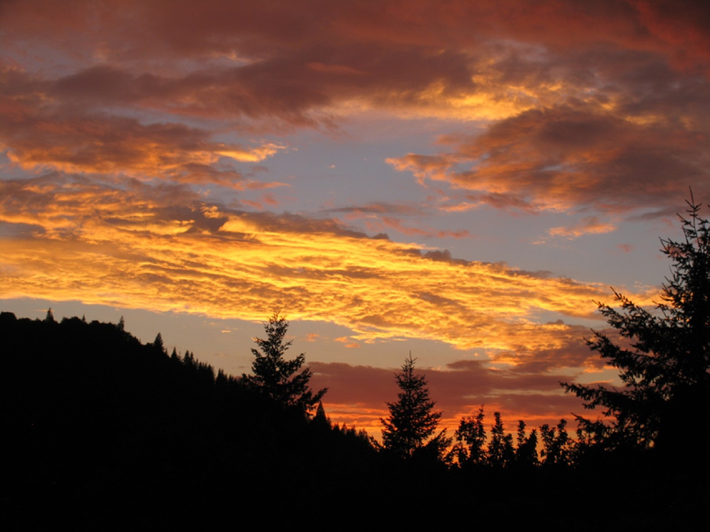

▶Healing · Meditation · Massage
When Angels Dream III
Anton Mizerak with Manose, Laura Berryhill, Corbin Keep & Michael MandrellDigital album · $10
Music • Spirit • The natural world
Transformational healing music by composer and multi-instrumentalist Anton Mizerak—created for deep listening, connection, and renewal.
A musical sanctuary
For more than five decades, Anton Mizerak has woven the musical traditions of East and West into spacious, heartfelt compositions. From synthesizer and harmonica to tabla and Tibetan bowls, every recording invites you home to yourself.
Discover Anton's story →The recordings

▶Healing · Meditation · Massage

▶Deep relaxation
Music with friends

▶World · Jazz · New age

Gather in sound
Anton and Laura offer intimate transformational music concerts, spiritual services, ecstatic kirtan, and music for international tour groups—from their Mount Shasta studio to gatherings across the West.
The artists


Beyond the music
Walk the mountain's sacred landscapes with Anton or Laura through Mount Shasta Retreat.
Explore → 02Talks and workshops exploring the living connections between mythology, religion, and music.
Discover → 03An intimate Mount Shasta performance venue for concerts, groups, and spiritual gatherings.
Visit → 04Memories and information from decades of Spiritual Living Retreats by the Pacific.
Remember →
Watch & listen
Original songs, live performances, chants, hymns, covers, and music in nature.
Explore videos ↗